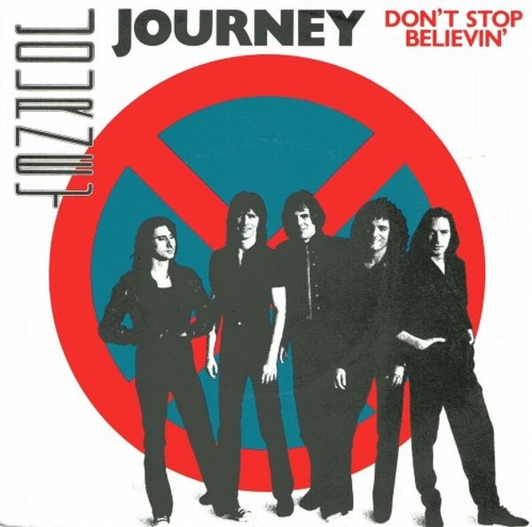

We've spoken about what makes an experience and how user personas can play an important (though by no means perfect) part in understanding the people we're trying to create an experience for. But we also need to mark out the experience itself.

It might be easy for a company to think they understand the experience they're creating for users. After all, they create the products and services. But just like there's a big difference in fidelity between a napkin sketch with directions and a detailed map, there's a big difference between what people think they're creating and the actual experience.
Creating an actual, detailed journey map from real world customer data can be incredibly useful, especially in the context of design. It can show problem areas that companies may not have predicted or thought of, both big and small. It can contextualize the different touch-points, which is important in getting varied design, product and service teams on the same page. They need to understand how all their different offerings fit together.
What makes a good journey map? First it needs to be able to stand on its own. It needs to able to convey information and insights without having to consult a bunch of different sources. It should be backed up by data, but that data doesn't need to be shoved in there, it should help in making a point. And the insights that the journey map is showing should ideally be actionable.
It's a bit of balancing act between showing too much detail and not enough. It's important to define the "level of zoom" early in the process. Decide how deep and detailed the journey map needs to go, because it can quickly seem like a rabbit hole of data. It's often relevant to step back and ask is this relevant? The end goal isn't to just create a beautiful or data filled map after all. Its to create something useful.
Another question that needs to be answered is how many journey maps to create? "What?!" you might be thinking. More than one? That's crazy talk. But it can be incredibly useful, because as we've discussed, experiences are contextual. Ideally, the user personas have helped condense things down to just a few users, so making the journey maps isn't going to seem excessive. And again, the goal here is to reveal areas that may not meeting customer satisfaction, and as a result, may be detracting from other parts of an otherwise good experience.
Where's the treasure, you might be thinking. Surely a good map should point to some treasure? (what's the point of a map anyway? Especially if all roads lead to Rome. Or in the case of design, an ill-informed comparison to Apple). Well, the map essentially shows the front-end of the business. What the customer sees. After all, the customer doesn't care about why back-end logistics means their fries are soggy. They just want crisp crunchy fries. Adding a layer to the journey map can show the process that go into creating a journey for the customers. Add a another layer, and it can show all the processes in the company that are supporting these customer facing functions.
At this point we've got something called a Service Blueprint. It's essentially a Journey Map on steroids. It can not only help build empathy, but re-contextualize the processes of a company around the benefit to the customer, rather than a supply chain or org chart. This can be very helpful in figuring out where things are going slack, and opportunities to improve. A disappointing customer experience could be the result of problems much further up the chain.
After doing all this, it might be helpful to build a different kind of map (there's gold at the end of this one, I promise!). A future state, or ideal journey map. This would be the kind of journey you really want customers to have. And then build up the services that might be required to create that ideal customer journey. Layering this on top of the existing journey map(s) can show areas that are lacking and scope to build a better customer experience.
As with most design tools, journey maps and service blueprints help to build empathy, and shift focus away from conversations about business, back to what matters, the customer. They can also create a common language or frame for various teams to understand how their function relates to other functions and to the customer. They're not perfect, there's no ideal formula, and they take a fair amount of work to get right. But along the way, many questions need to be asked of the customer, the organization and the product or service offering. Personally, I've found them to be incredibly useful, as they can show all the little hurdles and problems and things that need to be solved. Many times, there isn't a big problem that needs to be boiled down into a single big problem statement, but a bunch of small hiccups and hurdles that irritate customers, and figuring and fixing those can be both very difficult, but also very rewarding.
The best resource I’ve found to learn more about this is still the Adaptive Paths guide.